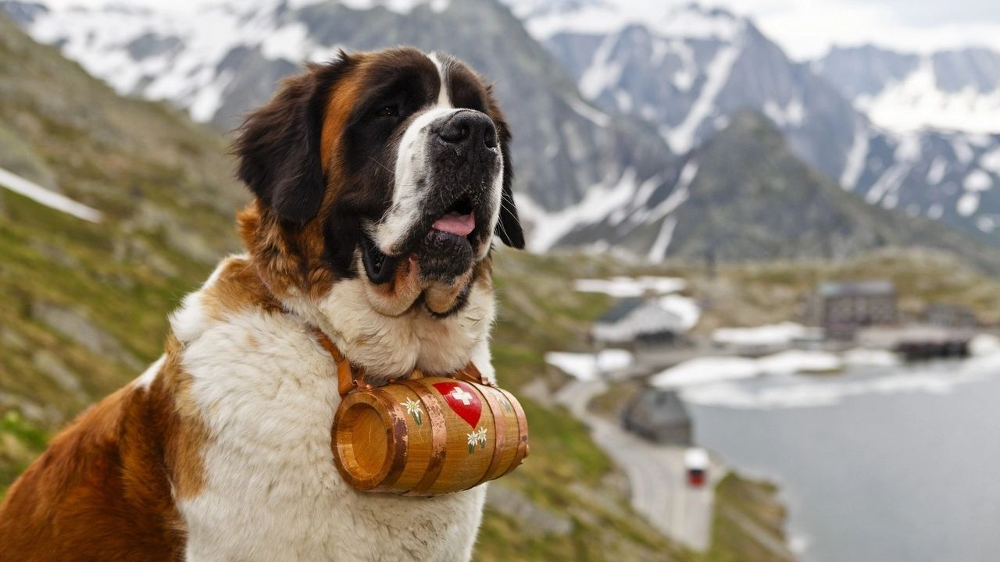

The St Bernard: the making of an Alpine legend
HistoryThe Great St Bernard Hospice It all began in the 11th century, high up in the Western Alps of the canton of Valais (Switzerland). At an altitude of some 2,469 metres stands the Great St Bernard pass, a mountain route between Italy and Switzerland. In those days, the pass was notorious for being extremely dangerous – hold-ups were commonplace and many pilgrims fell victim to attacks from Alpine bandits. One man decided to take matters into his own hands. His name was Bernard de Menthon (also known as Bernard du Mont-Joux), the Archdeacon of Aosta. To make the pass a safer place for travellers, he founded the imposing Great St Bernard hospice, which was placed under the jurisdiction of the Bishop of Sion. As well as providing a welcome refuge for travellers, the hospice was also a place of worship; the presence of a church on the site is documented as far back as 1125.
The cask – an essential part of the St Bernard image
There are certain things which we instantly associate with the St Bernard. One of them is, of course, the cask. Although its origins are disputed, some contend that the little wooden barrel attached to the dog’s leather collar had a part to play in rescue missions. It was thought that the alcohol inside would temporarily restore blood flow. But what kind of alcohol was it? Some say rum, others say schnapps. Some even claim that it was a local concoction made according to a secret recipe. As the many depictions of the St Bernard prove, the little barrel, regardless of its contents, has contributed to the dog’s iconic image.